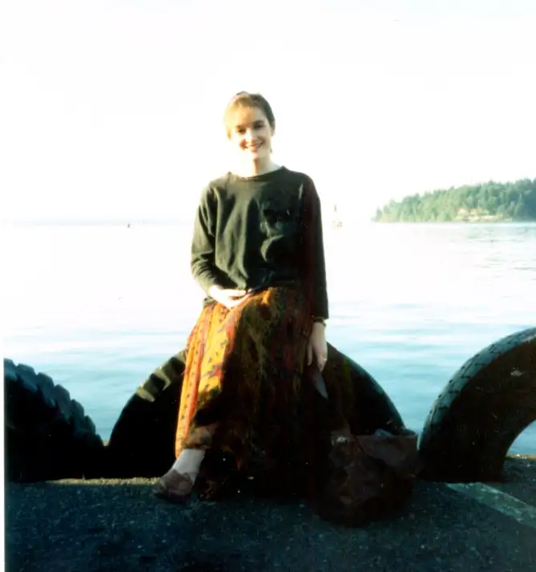
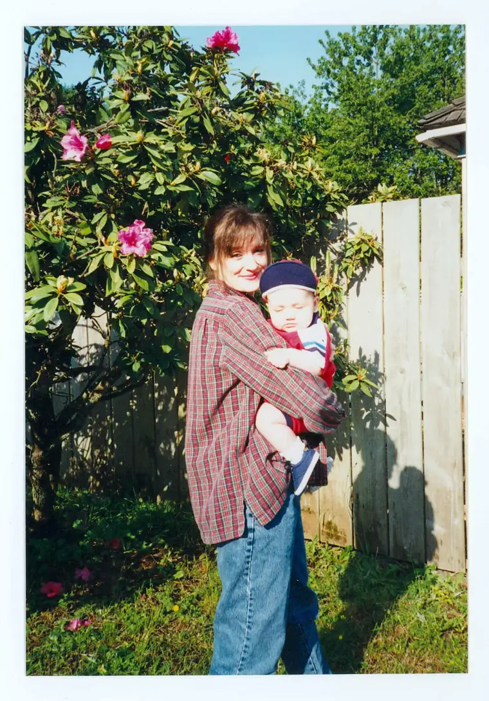
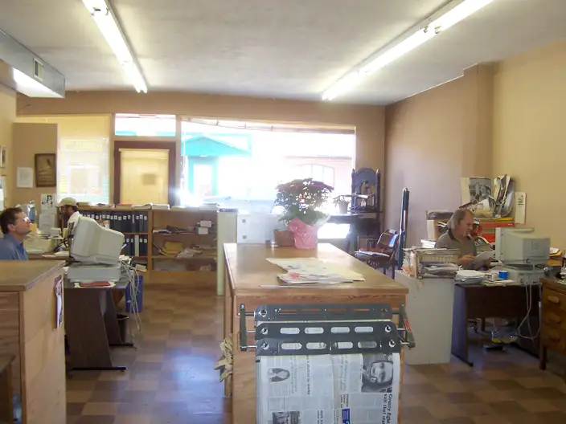
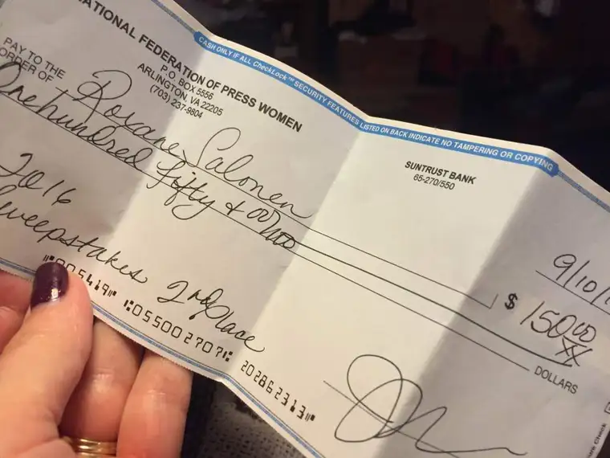

Recently, I took a local TV news station to task for reporting in what I felt was an unfair manner on activity at our state’s local abortion facility.
While I respect the profession of journalism, and consider myself part of it, I have enough regard for the discipline that I expect it to do what it was meant to do: seek and report on truth, in a fair and balanced way.
I expected some push back from the piece, which ran Oct. 1, and I did get some, but not not the kind I was anticipating.
The very first response arrived through email almost immediately after the column went “live” on the web. It came from a former colleague, someone whose desk I used to pass while working in the newsroom of The Forum as a full-time features reporter.
He took issue with my identifying myself as a journalist, and asked that I please reconsider. He said it caused confusion, since my piece was slanted.

He acknowledged, however, how I’d mentioned the difference between subjective and objective writing within the column. I wrote that line for the very reason he was complaining: to not confuse.
Specifically, I said: “To be clear, columns and editorials, by design, are expected to lean in a certain direction. But for news stories to earn their label, they must be told straight.”
While I currently am not writing straight news pieces, as a trained journalist, I do understand the business of journalism. I have spent time in classrooms learning the profession and working in newsrooms, and outside of them. Just because my life has pulled me away from a regular beat that requires strict adherence to objectivity, that shouldn’t exclude me from being able to comment on the need for this kind of journalism.

Which is why I wrote the piece. We do need to hold ourselves to a higher standard.
Yes, I say “we.” I never walked away from my profession. My emphasis within it simply changed. I earned my bachelor of science degree in mass communications from Minnesota State University Moorhead in 1991. My area of concentration was broadcast journalism, with additional courses in print journalism, and a music minor. Ever since then, I’ve been connected through various professional organizations and my work. It’s an important part of who I am and the gifts I offer.
My former co-worker wasn’t the only one to fire these shots at me. I received additional criticism from another in the profession locally who inferred that “a true journalist” would know the difference between an objective piece and one that isn’t.


The week my column ran, a friend pointed out a local Facebook thread started by a local meteorologist’s wife that had folks here discussing whether I was in fact a real journalist, which led to an even wider discussion about what constitutes real journalism these days. One commented that even the sports pages are, in some sense, propaganda. I can’t disagree.
But much of this has left me scratching my head. From my view, the conversation isn’t so much about what I deserve or don’t deserve to be called. We’re in agreement regarding the need for objective, balanced reporting; I couldn’t agree more. It’s the very reason I wrote the piece in the first place Yes, that non-objective piece on the need for objectivity. But what’s really roiling under the surface here?
The thing is, if journalism truly were living up to its promise of delivering news fairly and accurately, these complaints would seem more weighty to me. However, ample evidence suggests that is not happening widely enough right now. Few people really trust in fair and balanced these days. They are suspicious, and rightly so. I’m wondering if the reaction that came from my colleagues might have more to do with that underlying and growing mistrust between public and media than a solid complaint against me.
One writer calls the current journalism crisis — that lack of objectivity — Newsgate 2016. Her forthcoming book, “Smear,” details the injustices. This shows promise of being an illuminating read.
And speaking of calling out one’s own profession, the folks at Get Religion website have impressed me with their smart pieces on the frequent omissions of traditional media, particularly on reporting on matters of faith. As a columnist who current writes mainly on that topic, I’ve found the way they shine their journalistic flashlights in the darkness helpful. They’re even fair enough to note that we can’t take the position that all news media gets its wrong every time, as mentioned here. And I would agree. As I noted in the column, good reporters still exist, and we ought to give them credit where and when it is deserved.
But we must stay alert, as the same article points out, for those times when integrity lacks, and I think it’s in our right to make mention of it.
That’s what I did in my column, and I have not found any good reason so far for rethinking my essay.
My former colleague also pointed out that at the very least, I should have been honest about being connected to the 40 Days for Life initiative mentioned therein. I think I’ve been pretty transparent in my column about my public prayer activity, so again, I’m not sure what to make of his complaint. It’s fairly out there here: “But for those of us working hard to help change hearts and minds on the issue of abortion, it was a stab to the chest.”
In the above piece, Sharyl Attkisson calls work like mine “viewpoint journalism.” I still see the word “journalism” in there, and that’s all I’m saying.
I found it important to clarify, especially after being lashed publicly by this local man.
But honestly, all the conversation that swirled about as the result of my piece missed the more important message I was trying to convey. People are dying at this facility, and the last thing we need is to offer the place free advertising from our local media. We need to think a little bit more on what our responsibility is here.
Is it to go after truth and create a more just world through that? That drives me, and even if some in my profession would call me out as a fake journalist, it doesn’t change the reality of the travesty occurring, and our need to highlight it. I have a lot of respect for The Forum for allowing my voice, despite what some of my own colleagues feel about it.
All this has sort of collided just before I learned I’d earned an award from the National Federation of Press Women, who honored me as the second highest winner of awards in their annual communications contest. Since I wasn’t able to attend the conference in Kansas last month, it took a while for me to know this had gone down, not to mention find my way to the surprise monetary reward. Bonus!

I am grateful for these moments that bring balance. I am grateful that people in my profession can stand back and see the forest through the trees. I appreciate the conversation that has begun as a result of my column questioning what true journalism is, and hope another conversation about human dignity is also taking place. I think both are discussions terribly worth having.
Q4U: Do you think modern-day journalism lives up to its primary mission of fair and balanced? Why or why not?